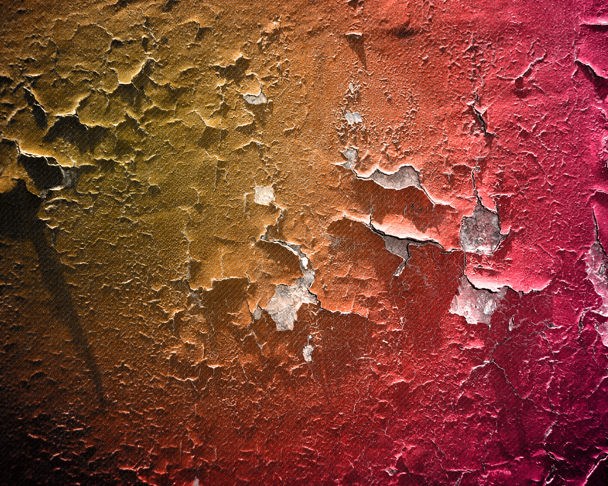

This is a simple presentation app made using HTML5 technologies.
There are three ways you can use to navigate these slides:
The next slides will cover some features that are supported in this app.
If you want to view this presentation in full screen, pressing F11 should do it.
As you can see, the presentation supports fades between slides.
These fades are made using CSS 3D transformations.
The presentation is not limited to text only. It supports adding images and videos:
The presentation theme can be changed easily. You can switch between different themes with the following links:
Changing presentation theme does not, however, change individual slide styles. This slide contains individual text style and image position.
The next slide is so called "title slide".
The presentation has built-in support for adding simple bar charts.
Bar charts can be created easily with the following non-standard HTML code:
<pa-barchart>
<pa-bar value="250" name="Cars" color="#8181e0"></pa-bar>
<pa-bar value="600" name="People" color="#e08197"></pa-bar>
<pa-bar value="50" name="Goods" color="#a0e081"></pa-bar>
<pa-bar value="10" name="Cool Stuff" color="#c73ce0"></pa-bar>
<pa-bar value="450" name="Box" color="#49e0ce"></pa-bar>
</pa-barchart>
The PresentationApp converts the code above to a standard HTML and CSS. The result can be seen on the next slide.
The bar chart is converted to table on small mobile devices.
If you do not want to work with non-standard HTML code, it is of course possible to create bar charts using standard HTML and CSS.
The presentation works well on all kind of devices and screen sizes. If you are viewing the presentation on the desktop, try resizing the browser window size and switch between slides to see how they responds to the change.
There are many advantages using this or similiar HTML5 presentation software instead of PowerPoint. Think about the following benefits:
There are, however, some reasons why you might want to stay with PowerPoint:
If you want to use this presentation app to make your own presentation, feel free to do so. This presentation app is free and open source software. The source code can be found from the project's GitHub page.
The presentations are located in separate folder so you can create as many presentations as you want and use this app to show them. The slides can be modified easily if you know a little bit of HTML. New themes can be created with CSS.
New features to be released in the future: PDF Export, autoplay...
At this point, here is a photo of my cat: